|
|
| The Windows Mobile Pocket PCs Showcase |
(Updated June 30, 2005)
This guide provides a sampling of PDAs and other handheld devices based on Microsoft's Windows Embedded software platforms, which include Windows Mobile, Windows CE, and Windows XP Embedded. The devices in this section span a broad range of capabilities, including standard PDAs, specialized PDAs for the disabled, rugged PDAs for military and industrial applications, handheld GPS instruments, bar code scanning handhelds, and more. Note that this list is not meant to be all-inclusive; many of the manufacturers represented here offer additional models covering a spectrum of features and specs. This list will be updated frequently, so be sure to check back periodically for the latest info. The devices are listed alphabetically, by manufacturer.
Note: Smartphones and Pocket PC Phones are covered in a separate section of this guide.
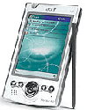 Acer n20 series Pocket PC -- June 29, 2002 -- This series of PDAs is based on an Intel 400MHz PXA250 XScale running Windows Pocket PC 2002. The 3.8-in. 240 x 320 pixel TFT color touchscreen display is slightly larger than that of most PDAs. Expansion includes built-in IrDA, a Memory Stick slot, and an expansion connector, as well as an optional expansion sleeve with PCMCIA and CompactFlash sockets. The n20w also offers built-in 802.11b. details
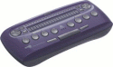Alva MPO 5500 mobile phone/PDA -- Apr. 14, 2003 -- for the visually impaired. the MPO 5500 runs Windows CE .NET on an Intel PXA255. It combines a tri-band GSM radio, mobile Internet services, and note-taking functionality with braille display. details
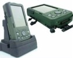Amrel Patriot DA4-M -- June 28, 2004 -- Said to be the first fully rugged PDA in its size class to offer a 4-inch transflective touchscreen display with 480x640 resolution, the Patriot DA4-M PDA boasts a sunlight readable display and offers a choice of operating systems -- Windows CE .NET 4.2, supporting the full 480x640 screen resolution; or Pocket PC 2003, at 240x320 resolution. The DA4-M runs on a 400MHz Intel PXA255 processor. details
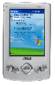Asus My Pal A600 -- June 29, 2002 -- This slim (just .5 in.) PDA runs Pocket PC 2002 an Intel 400MHz PXA250 XScale processor. It provides a 3.5-inch color TFT 240 x 320 pixel display, is packaged in an aluminum alloy case, and weighs just 4.9 oz. Expansion and wireless connectivity are via an integrated SD/MMC slot and fast IrDA (up to 4Mbps) interface. details
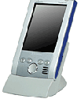Audiovox Maestro -- June 29, 2002 -- The Maestro is based on a 206MHz Intel StrongARM processor running Windows Pocket PC 2002. Its display is a 240 x 320 pixel color TFT LCD, and expansion options include CompactFlash and SD Card slots, and an infrared port. details
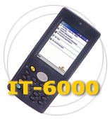Bitatech IT-6000 and IQ-3000 -- June 7, 2004 -- These handhelds from Bitatech combine PDA functions with bar code scanning and wireless communications. Both run Windows CE on Intel embedded processors. The ruggedized IT-6000 (pictured here) is based on a 400 MHz Intel XScale processor, and boasts dust and water-splash ratings along with the ability to survive a 1.2 meter drop. details
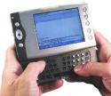Bsquare Power Handheld -- Sep. 04, 2002 -- This reference design helps jumpstart time-to-market for OEMs. It features a VGA display that presents web pages similar to a laptop, has a retractable QWERTY thumb-type keyboard, GSM cell phone, and built-in radio technology to access high-speed, always-on GPRS wireless data networks -- in a very small form factor. The device runs Windows CE .NET on an Intel PXA250 processor details
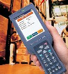Casio DT-X10 -- Dec. 8, 2004 -- The DT-X10 rugged handheld terminal incorporates a CMOS imager and various wireless options, and is aimed primarily at the transportation market. The device runs Windows CE on an Intel PXA255 processor equipped with 32MB of RAM and 64MB of Flash, and boasts a 3.5-inch QVGA color TFT LCD screen. details
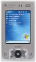Casio IT-10 -- Nov. 19, 2004 -- The IT-10 Enterprise PDA is shock, water, and dust resistant making it suitable for use in tough environments. It runs Windows Mobile 2003 Second Edition, and boasts a VGA resolution TFT LCD with LED backlight. Casio is targeting the device at retail store management, sales force automation, equipment and facilities maintenance and management, and market research applications. details
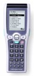Casio DT-X5 -- Sep. 13, 2004 -- This rugged industrial handheld terminal runs Windows CE version 4.1 on an SH-3 processor. It features a CMOS Imager that allows the device to read stacked 2-dimensional barcodes as well as traditional 1-dimensional codes. The DT-X5 can also capture images such as signatures. details
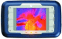Control Synergy "Mobile Information Gateway" -- July 28, 2003 -- The "MIG" is a low power RISC-based handheld computing device running Windows CE .NET targeted at mobile enterprises and workplaces requiring real time information access. It runs on a Hitachi SH3 processor. The device can withstand rugged environments, and is drop, dust, and splash resistant. details
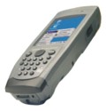DAP Microflex CE3240 -- Feb. 03, 2005 -- The lightweight, modularly expandable CE3240 targets mobile computing and data collection applications in harsh and demanding environments such as utilities, field service, emergency services, public safety, energy, transportation, and logistics. It runs Windows CE 5.0 on a 400 MHz Intel PXA255 processor. details
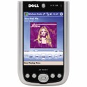Dell Axim X50 Series -- Oct. 12, 2004 -- All three devices in this series are based on Intel PXA270 XScale processors and run Windows Mobile 2003 Second Edition with Windows Media Player 10 Mobile. Key features include processor speeds up to 624MHz, integrated Bluetooth wireless connectivity, CompactFlash and SDIO/MMC expansion slots, up to 128MB built-in flash memory, and screen sizes up to full-VGA (640x480) resolution. details
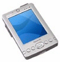Dell Axim X3 -- Oct. 24, 2003 -- based on Intel XScale processors and running Microsoft Windows Mobile 2003 software for Pocket PC, the Axim X3/X3i is lighter and thinner than its predecessors and features a bright color display, removable primary batteries, SD I/O slot, consumer infrared, and optional built-in wireless networking. details
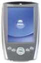Dell Axim X5 -- Nov. 13, 2002 -- The X5 is powered by an Intel PXA250 XScale processor and is offered in 300MHz and 400MHz versions. The X5 runs Windows Pocket PC 2002 and supports MP3 files and video applications for mobile entertainment. details
Diagnostic Instruments Di-400 -- May 26, 2004 -- The Di-400 is claimed to be the world's first fully customizable rugged "Auto-ID platform" for reading both barcodes and RFID tags. The device, which is based on a 400MHz Intel PXA255 XScale processor running Windows CE .NET, is expected to find applications in the asset management, inspection, maintenance, and homeland security markets. details
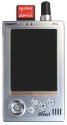d-Media inView N-911 -- Aug. 03, 2004 -- This Pocket PC boasts built-in GPS capabilities and 3D navigation. It is based on an Intel PXA263 processor running Microsoft's Windows Pocket PC 2003SE Chinese Edition. The N-911 is said to offer accurate positioning in a range of difficult and hostile environments, helping users to plot routes and locate services quickly and easily. It is equipped with an array of GPS features, including detailed maps, points-of-information and directional information. details
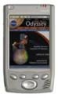FIC PocketPC KJ001 -- June 29, 2002 -- This Pocket PC-based device is powered by an Intel StrongARM SA1110 processor. The unit features built-in Bluetooth wireless and a 3.8-inch 240 x 320 pixel TFT color LCD with touchpanel. Interfaces include USB, iRDA, CompactFlash, SD card, RS232, speakers, and audio. details
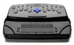Freedom Scientific PAC Mate -- Oct. 22, 2004 -- This all-purpose computer, running Windows CE on an Intel XScale processor, behaves like a full-featured laptop that acommodates users with visual disabilities. Freedom Scientific's "JAWS" technology allows Braille composition and speech output with Pocket PC compatibility. The unit includes either a QWERTY-style or braille keyboard, two Type II CF slots, USB, and IrDA ports. Models are about 10 x 6 in. in size and weigh under 2 lbs. including battery. details
Fujitsu iPAD -- Jan. 08, 2002 -- the iPAD is a multi-function handheld device targeting retail POS. It's powered by an Intel PXA20 XScale processor running Windows CE .NET, and features a bright, color touch-screen that works both in bright sunlight. Connectivity options include 802.11b wireless LAN infrastructure. Additionally, the the iPAD supports both XML and Voice Over IP (VoIP). details
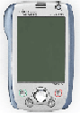Fujitsu Siemens Pocket LOOX -- June 29, 2002 -- This device is powered by a 400MHz Intel PXA250 XScale processor running Windows Pocket PC 2002. The display is 240 x 320 pixel TFT color touchscreen with auto-dim. USB, iRDA, and Bluetooth interfaces are included, and an optional GSM/GPRS receiver provides full mobile functionality. details
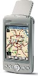Garmin iQue M5 Pocket PC with GPS -- Jan. 05, 2005 -- Garmin International, best known for its general aviation electronics, has introduced a Pocket PC that includes a GPS receiver along with Bluetooth wireless technology. The iQue M5 includes Garmin's "Que" mapping and navigation software, and provides voice-prompted turn-by-turn navigation. The device runs Windows Mobile 2003 Second Edition on a 416 MHz Intel PXA272. details
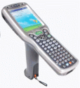HHP Dolphin wireless data collection handhelds -- Sep. 30, 2003 -- the Dolphin 9500 and 9550 are durable and ergonomic handhelds based on a 400MHz Intel XScale PXA255 processor running Microsoft's Windows Mobile for Pocket PC Professional software platform. Both units boast "triple-radio" communications which includes tri-band GSM/GPRS, Wi-Fi (802.11b) wireless, and Bluetooth. The devices are offered with a choice of 240 x 320 color or monochrome displays equipped with an industrial-grade touchscreen, built-in digital camera/scanner, plus a rich set of input/output interfaces. details
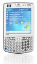HP iPAQ hw6515 -- Jun. 17, 2005 -- Dubbed the Mobile Media Companion, the hw6515 is seen as Hewlett-Packard's answer to the PalmOne Treo 650. It runs Windows Mobile 2003 Second Edition Phone Edition on at 312 MHz Intel PXA270 processor with 64 MB of RAM and 64 MB of Flash. The device combines a TFT touchscreen, QWERTY keyboard, quad-band GSM/GPRS/EDGE communications, GPS, 1280x1024 camera, SD and MiniSD card slots, and both Bluetooth and IrDA. details
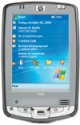HP iPAQ hx2x00 series -- Nov. 30, 2004 -- Hewlett-Packard's new line of iPAQ Pocket PCs runs Windows Mobile 2003 SE on Intel PXA270 processors. The three PDAs boast full-color QVGA displays usable in both portrait and landscape modes, Bluetooth wireless, CompactFlash and SD card expansion, and security enhancements including a fingerprint sensor in the high-end model. The entry-level hx2100 (shown here) is available now, while the higher-end hx2400 and hx2700 are due for release in December. details
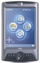 HP iPAQ hx4700, rx3000, rz1700 -- July 26, 2004 -- the hx4700 boasts a 4-inch color VGA screen and a touchpad that provides a "mouse-like" cursor for easy navigation; the hx4700 and rx3000 offer Bluetooth and 802.11b wireless, while the rx3000 adds the option of a 1280x960 pixel camera with 4x zoom; the rz1700 lacks wireless, but includes USB and serial ports. All include MMC/SDIO and/or CompactFlash slots. The devices are powered by Intel and Samsung processors, running Windows Mobile 2003 Second Edition for Pocket PC. details HP iPAQ hx4700, rx3000, rz1700 -- July 26, 2004 -- the hx4700 boasts a 4-inch color VGA screen and a touchpad that provides a "mouse-like" cursor for easy navigation; the hx4700 and rx3000 offer Bluetooth and 802.11b wireless, while the rx3000 adds the option of a 1280x960 pixel camera with 4x zoom; the rz1700 lacks wireless, but includes USB and serial ports. All include MMC/SDIO and/or CompactFlash slots. The devices are powered by Intel and Samsung processors, running Windows Mobile 2003 Second Edition for Pocket PC. details
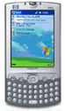HP iPAQ h4350 -- Dec. 8, 2003 -- the iPAQ h4350 is HP's first Pocket PC with an integrated keyboard. The device is based on a 400MHz Intel XScale processor running Windows Mobile 2003 Software for Pocket PC (Premium Edition), and includes a 3.5-inch 240 x 320 pixel color TFT LCD, SD Card expansion, and built-in WLAN 802.11b and Bluetooth wireless capabilities. details
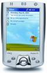HP iPAQ h2210 -- June 23, 2003 -- HP claims the iPAQ h2210 is the smallest Pocket PC on the market to include dual-slot expansion (CompactFlash Type II and Secure Digital). The device is based on a 400MHz Intel XScale PXA255 processor running Windows Mobile 2003 software for Pocket PC. Other key features include a color TFT display, built-in Bluetooth wireless, and a removable battery. details
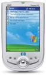HP iPAQ h1940 -- June 23, 2003 -- the h1940 Pocket PC is based on a 266MHz Samsung S3C2410 processor running Windows Mobile 2003 software for Pocket PC. Other key features include a color TFT display, built-in Bluetooth wireless, and a removable battery. HP iPAQ 1940 details are here. HP has also introduced a low-priced version, the 1935.
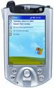HP iPAQ h5150 and h5550 -- June 23, 2003 -- HP claims that the h5550 is the first Pocket PC to include 128MB of RAM along with integrated biometric security and 802.11g wireless networking. The h5550's biometric fingerprint reader can be combined with a personal identification number, password or both. Both units are based on 400MHz Intel XScale PXA255 running Windows Mobile 2003 software for Pocket PC, and provide color TFT displays and removable batteries. details
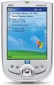HP/Compaq iPAQ 1910 -- Nov. 19, 2002 -- the iPAQ 1910 is powered by a 200MHz PXA250 XScale processor running Pocket PC 2002. The device is equipped with an SD card expansion slot, and a 240 x 320 pixel TFT color LCD. details
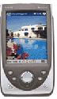HP Jornada -- June 29, 2002 -- The Jornada is based on a 206MHz StrongARM processor running Pocket PC 2002. Its interfaces include IrDA, USB, and RS-232C, and its display is a 240 x 320 pixel 3.5-inch color Reflective TFT LCD. details
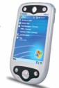i-mate PDA2 -- June 02, 2005 -- In addition to tri-band GSM/GPRS, Wi-Fi, and Bluetooth, the i-mate PDA2 comes preloaded with Skype VoIP software for making low-cost phone calls across the Internet. The device runs Windows Mobile on a 520 MHz Intel XScale processor with 128 MB of RAM and 64 MB of Flash and is "tuned for heavy data processing," according to the company. details
Intelligent Instrumentation LANpoint Mobile -- Apr. 08, 2005 -- This handheld complements II's line of rugged terminals running on Windows CE. It runs Windows CE 4.1 on a 400 MHz PXA255 processor, with 64 MB of RAM and 48 MB of Flash memory. The company characterizes the device as an "open architecture" handheld that takes advantage of "current and future technology" and offers a range of options. details
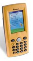Intermec 730 I-Safe -- Apr. 12, 2005 -- The 730 I-Safe, based on Windows Mobile for Pocket PC, is UL-certified to be safe for use in potentially explosive environments. The device runs Windows Mobile for Pocket PC on a 400 MHz PXA255 processor, with 64 MB of RAM and 64 MB of Flash. It includes built-in Wi-Fi and Bluetooth, and an SDIO card slot. details
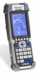Intermec CK60 -- Apr. 05, 2005 -- The rugged CK60, aimed at the "direct store delivery" market, comes with either Windows CE 5.0 or Windows Mobile for Pocket PCs. It features a "non-volatile memory" that preserves applications and databases if the battery runs down. details
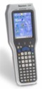Intermec CK31 -- Jan. 18, 2005 -- A ruggedized upgrade to its CK30 mobile computer. The CK31 runs Windows CE on an 400 MHz XScale processor, includes a built-in barcode scanner and 802.11b/g Wi-Fi wireless, and is versatile enough to support both legacy terminal emulation and modern graphical, Web-based applications, Intermec says. details
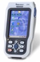Intermec CN2 -- Jan. 14, 2005 -- The CN2 measures just 5.8 x 3.4 x 1.4 inches in size, small enough to fit in a shirt pocket. It runs Windows CE 4.2 on a 400 MHz Intel PXA255 processor, incorporates Wi-Fi and a bar code scanner, and features an ergonomic design that supports single-handed operation. details
Intermec CK30 -- Sep. 22, 2003 -- The CK30 data collection terminal comes with a built-in 802.11b/g radio for 54 Mbps data transfers, integrated Bluetooth for wireless printing, and various imaging and color display options. The device is based on Microsoft's Windows CE .NET operating system running on a 400MHz Intel XScale PXA255 processor equipped with up to 64MB RAM and 64MB Flash memory. details
Intermec 6651 -- Oct. 7, 2002 -- The Intermec 6651 is a Handheld PC optimized for mobile enterprise applications, with the flexibility to use it as a notebook or as a pen tablet computer. The 6651 is based on Toshiba's 129MHz MIPS CPU, and offers an integrated CMOS camera, a bright, crisp, fold-over display, and VGA video output. It runs Windows for Handheld PC 2000. details
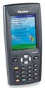Intermec 700 Color mobile computer -- Sep. 25, 2002 -- This handheld device is based on an Intel 400MHz XScale processor and bosts a large, full-color display along with a unique imager suitable for reading barcodes (including 2D symbologies), taking photographs, and capturing signatures. The 700 Color is also unique in its ability to integrate up to three integrated wireless communication options within a single device, including an 802.11b radio, a GSM/GPRS WAN radio, and a power-managed Bluetooth radio. details
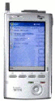Intrinsyc Carbonado -- Apr. 13, 2004 -- The Carbonado, also known as the Intel 2700G multimedia accelerator reference system, is a PDA-style development platform based on an Intel PXA270 XScale processor and a 2700G multimedia accelerator. The reference platform comes with "out of the box" support for Microsoft's Pocket PC 2003 and Windows CE .NET embedded operating systems, with support for other OSes is "on the roadmap." details
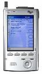Intrinsyc microPDA -- Dec. 19, 2002 -- This handheld reference design is intended for use in creating voice and/or data enabled wireless handhelds with real time communications capabilities. It features support for for Windows CE .NET, Smartphone, and PocketPC 2002, and is based on an 400MHz Intel PXA250 XScale processor. It is equipped with integrated GSM/GPRS tri-band communications, integrated Camera, Bluetooth, IrDA, USB, Multimedia Card/Secure Digital (MMC/SD), CompactFlash, Ethernet, and RS232. details
Intrinsyc CerfPDA -- Jan. 2, 2002 -- This handheld reference design is a high-performance, low-power reference platform based on a 192MHz Intel StrongARM 1110 processor. Connectivity options include Ethernet, RS232 serial, IrDA, USB, PCMCIA, and Bluetooth. details
Itronix GoBook Q-200 -- May 17, 2004 -- Claimed to be the "world's most rugged, advanced wireless handheld," the GoBook Q-200 runs Windows CE .NET on an Intel XScale processor and supports up to three wireless networks concurrently. The unit boasts a wide range of wired and wireless communication options and is aimed at mobile professionals who work in mission-critical environments such as field service and repair, inspection and service, public safety, telecommunications, utilities, insurance, and federal and military environments. details
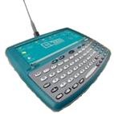Itronix fex21 -- June 29, 2002 -- A unique device that offers multiple communication protcols for highly mobile workforces. Ruggedized to meet military standards for impact and water resistance, the device runs Windows CE for Handheld PCs on a MIPS processor and supports a wide range of wireless PCMCIA-based communications options including Common Radio Module Architecture (CRMA) design along with CDPD, Motient (Ardis), Cingular Interactive (Mobitex), and dual-band GSM. details
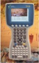Juniper Systems Allegro CX -- Sep. 7, 2004 -- The Allegro CX is the latest addition to the Allegro family of rugged, handheld "field PCs" from Juniper Systems. It runs Windows CE 4.2 on a 400 MHz Intel XScale processor and features a 62-button full alpha-numeric keypad, which is intended to be usable with gloved hands. The device is meant to be used in in natural resource and agriculture field data collection applications. details
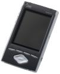JVC audio/video mobile PDAs -- June 24, 2003 -- This pair of Pocket PC based multimedia-oriented handhelds runs Windows Mobile 2003 on a PXA255 processor. Dubbed "iO", the units feature audio/video capabilites such as MPEG4 video capture/playback, wireless video streaming over Wi-Fi, and compatibility with selected models of JVC camcorders. details
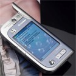Lenovo ET960 -- Mar. 03, 2005 -- The ET960, running Windows Mobile 2003 SE on a PXA272 processor, has several interesting features. It boasts a 10,000 entry address book. The handset function and PDA function are completely separable, enabling the device to be used on an airplane. And finally, the 1.3 megapixel camera is mounted on a "rotatable module" that swivels the lens through 180 degrees. details
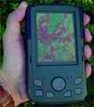Logic Instrument TetraPAD -- Apr. 29, 2004 -- Claimed to be the "first ruggedized PDA," the TetraPAD runs Windows CE on a 400 MHz Intel XScale processor. The device is enclosed in a magnesium case and meets Mil Specs for temperature, shock, and radiation, the company says. details
Logostek XPDA-9 -- Oct. 29, 2003 -- this Windows CE .NET based handheld computer is optimized for retail POS (point of sale) applications. It runs Windows CE 3.0 or 4.1 on an Intel SA110 processor and includes an integrated bar code scanner, magnetic strip 1 reader, printer, and optional CDMA/GSM wireless modem. Combining the functions of PDA, printer, bar code scanner, and credit card reader into an all-in-one device saves cost and also eliminates cumbersome use and configuration hassles. details
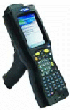 LXE ruggedized MX5 Pocket PC -- Feb. 10, 2003 -- LXE's ruggedized Pocket PC, running Windows PocketPC 2000 on an Intel SA-1110 processor, is intended for heavy duty operation in extreme environments. The MX5 has a magnesium housing that can withstand multiple six-foot drop. It can handle water and an optional internal heater allows operation in temperatures as low as -22 deg. F. LXE says it's intended for industrial and logistics applications as well as operation in ports where rain, salt, humidity, and fluctuating temperatures make for severe conditions. details
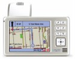Mio 136 -- Mar. 25, 2005 -- This Windows CE powered handheld GPS navigation device comes with an extensive street atlas of the North American continent and Hawaii. The Mio 136, which also includes a built-in MP3 player, is characterized as an inexpensive alternative to built-in automotive GPS systems. details
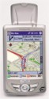Mio 168 RS -- Mar. 21, 2005 -- This device is a follow-on to Mio's 168 introduced in late 2003. The new device features a substantially improved and enhanced GPS receiver, according to a company spokesperson. details
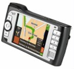Mio 268 and 269 -- Jan. 28, 2005 -- This pair of GPS handhelds runs Windows CE 4.2 on a 300 MHz Xscale processor. The 269 includes a 1-inch, 2.5 GB hard drive that holds complete map data for 22 European countries and still has 600 MB left over for MP3 files. details
 Mitac Mio 168 -- Feb. 27, 2004 -- Mitac claims its Mio 168 is the first Pocket PC with a built-in GPS receiver. In addition to GPS, the device features a 3.5-inch TFT 240 x 320 pixel (QVGA) transflective LCD display, a 300MHz Intel PXA255 XScale processor, and an SD/MMC slot for memory expansion. Its embedded operating system is Microsoft's Windows Mobile 2003 Pocket PC. details Mitac Mio 168 -- Feb. 27, 2004 -- Mitac claims its Mio 168 is the first Pocket PC with a built-in GPS receiver. In addition to GPS, the device features a 3.5-inch TFT 240 x 320 pixel (QVGA) transflective LCD display, a 300MHz Intel PXA255 XScale processor, and an SD/MMC slot for memory expansion. Its embedded operating system is Microsoft's Windows Mobile 2003 Pocket PC. details
Mitac Mio 339 and 558 -- July 01, 2003 -- The Mio 339 includes an integrated digital camera along with a host of multimedia features such as audio recording and MP3 player capabilities. The Mio 558 targets "corporate users" in the enterprise and boasts advanced wireless connectivity (including VoIP), multimedia functions, and dual expansion card-slots. Both are powered by 400MHz Intel XScale PXA 255 processors and run Windows Mobile 2003 operating system. details
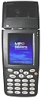MP2 Solutions MRT300 -- June 14, 2005 -- The MRT300 is a rugged POS terminal that combines WWAN, WLAN, barcode scanner, printer, and magnetic stripe reader. It runs Windows Mobile software for Pocket PCs on a 520 MHz Intel PXA270 processor with 64 MB of RAM and 64 MB of Flash memory. details
National Semiconductor Origami -- Nov. 11, 2001 -- this proof-of-concept handheld design integrates popular Internet and multimedia functions into a single, portable unit. About the size and weight of a small digital camcorder, the National Geode Origami Mobile Communicator is a flexible unit that folds and unfolds to perform eight popular consumer electronics functions in one device. The device targets original equipment manufacturers (OEMs), and is developed under a joint agreement between National Semiconductor's Conceptual Products Group, Studio RED, and CoCom International. It runs Windows XP Embedded. details
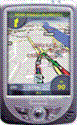
Navman Personal Interactive Navigation (PiN) Device -- May 03, 2004 -- Combining a full GPS solution with all the features you'd expect in a Windows Mobile 2003-based Pocket PC, the Personal Interactive Navigation device (PiN) is powered by a 300 MHz Intel PXA255 processor. The 3.5 inch color TFT LCD provides 3D street-level views of your route, and plots your position with an accuracy of five meters 95 percent of the time. details
NEC MobilePro 900 -- May 12, 2003 -- a clam-shell style handheld PC that is larger than most PDAs, but smaller than most sub-notebooks. Weighing under 2 lbs. the handheld has a 8.1 inch VGA display and runs on a 400MHz Intel XScale processor. It is powered by Windows CE 3.0 and Handheld PC 2000. details
NEC Mobile Pro 790 -- June 29, 2002 -- This device is based on the company's 168MHz NEC MIPS processor amd runs Microsoft's Windows for Handheld PC 2000. The device is equipped with PCMCIA and CompactFlash expansion slots. Other interfaces include serial, VGA out, infrared transmitter/receiver, and an audio jack, plus, an integrated V.90 modem. At under 2 pounds and just 1.1 in. thick, it features an 8.1 in. diagonal, half-VGA DSTN color touchscreen, and QWERTY keyboard. details
NEC Mobile Pro P300 -- June 29, 2002 -- This mobile PDA is based on a 206MHz Intel StrongARM 32-bit RISC processor running Pocket PC 2002, and provides an on-screen keyboard, handwriting recognition, and a voice recorder. The device has a 320 x 240 TFD color LCD display and includes an SD Card expansion slot that supports up to 128MB of added memory. Interfaces include CompactFlash, USB, IrDA, built-in speaker/microphone, and audio input/output jacks. details
 Olympus "Tough Digital Assistants" -- Feb. 01, 2005 -- Olympus calls this pair of rugged PDA-like devices "Tough Digital Assistants" (TDAs). The slim, light-weight TDAs run Windows CE 4.2 on a Freescale MXL processor with up to 128MB RAM and 256MB Flash. They offer built-in Bluetooth and optional 802.11b wireless. Olympus, best known for its cameras and optics, says that it has a "long standing history" of designing and building wireless handheld devices for an unspecified OEM partner. details Olympus "Tough Digital Assistants" -- Feb. 01, 2005 -- Olympus calls this pair of rugged PDA-like devices "Tough Digital Assistants" (TDAs). The slim, light-weight TDAs run Windows CE 4.2 on a Freescale MXL processor with up to 128MB RAM and 256MB Flash. They offer built-in Bluetooth and optional 802.11b wireless. Olympus, best known for its cameras and optics, says that it has a "long standing history" of designing and building wireless handheld devices for an unspecified OEM partner. details
OQO -- Apr. 17, 2002 -- Called the 'ultracomputer', PC. OQO's new device, based on the Transmeta Crusoe processor, weighs just 9 ounces, is small enough to fit in your shirt pocket, yet contains the processing and storage resources of a well equipped desktop PC. In fact, it is designed to instantly transform itself into just such a system by popping it into a cradle which adds connections to a full-sized keyboard and monitor, along with a standard Ethernet network interface. Wireless interfaces for both IEEE 802.11 and Bluetooth are built directly into the device. details
Packard Bell Pocket Gear -- Nov. 13, 2002 -- Packard Bell's Pocket Gear series of Pocket PC-based PDAs comes in two models -- the 2030 and the 2060. Both are based on Intel's StrongArm processor running Windows Pocket PC 2002. The two devices share similar specs. Display for the devices is a QVGA, 3.5-inch, 240 x 320 pixels reflective display with front light and 65,536 colors. A Secure digital (SD) Card provides wireless access and other expansion options. details
PSC Falcon 4420/4410 Portable Data Terminal -- Jan. 16, 2003 -- Aimed at retail and industrial applications, these ruggedized handhelds run Microsoft's Windows CE .NET embedded operating system and are based on 400 MHz Intel XScale processors. details
Psion Workabout Pro S -- Jan. 10, 2005 -- The Workabout Pro S is a compact, numeric keypad version of Psion's line of Workabout Pro rugged handheld computers. It offers the same customization capabilities, expansion, task-specific ergonomics, and radio and data input options as the Pro C, but in a more compact and lightweight form-factor, Psion says. details
Psion 7530 -- Sep. 14, 2004 -- This "ultra-rugged" handheld runs Windows CE on 400 MHz PXA255. With its built-in barcode scanner and RFID reader, the device targets data collection applications in extreme environments such as commercial freezers. It offers a wide range of wireless communication and expansion card options. details
Psion Workabout Pro -- Aug. 04, 2004 -- The Workabout Por is based on a 400 MHz Intel PXA255 processor and is available in two models -- a monochrome display and a color display. Psion says the Workabout's expansion and customization capabilities enable it to meet the needs of the mobile computing, supply chain, and logistics and retail markets. The company offers a hardware development kit for use in designing third party expansion modules. details
Psion 7535 -- May 21, 2003 -- The Psion Teklogix model 7535 is a Windows CE .NET based "rugged hand-held computer" intended for mobile data collection in harsh environments. The device is powered by an Intel XScale processor and is said to meet stringent dust and water protection, shock and vibration, and drop-test levels. details
Sammi Smart-eCompact -- Sep. 3, 2004 -- This rugged handheld data terminal runs Windows CE 4.2 on a 400 MHz Intel PXA255 processor. It is equipped with an alphanumeric keypad, touch screen, and integrated 2D scanner and is aimed at manufacturing and warehousing operations, and for automating sales, field service, healthcare, hospitality, retail, and public safety personnel. details
Samsung NEXiO 160 -- Jan. 2, 2003 -- This PDA is based on an XScale PXA250 processor running Windows CE.NET 4.1. It features a 5 inch wide transflective color LCD that offers wide screen internet browsing. Optional accessories include a QWERTY style keyboard that doubles as a hard cover for the unit. Samsung has integrated the usual interfaces including WiFi Lan (802.11b),Compact Flash Type II Card Slot, and USB docking. A PCMCIA adapter is an optional accessory. details
Spacetime Golden Communication Technology Injoy -- Feb. 25, 2005 -- This high-end PDA/phone combo running Windows Mobile 2003 SE is specifically targeted at streaming media and video-on-demand (VOD) applications requiring high data bandwidth It uses CDMA2000 1X to achieve the required transfer rates. The Injoy is powered by a 400MHz Samsung 2440 ARM9v4 processor equipped with 64 MB of SDRAM and 128 MB of Flash memory. details
Symbol MC3000 -- Jan. 12, 2005 -- A small, lightweight, rugged mobile computer targeted at the retail and transportation and logistics industries. The MC3000 runs Windows CE 4.2 on an Intel PXA270 processor, and features a 320x320 resolution screen, 30 percent larger than typical PDAs' 320x240 (QVGA) screens. The optional laser scanner head rotates to adjust scanning orientation for increased comfort. details
Symbol MC50 -- Oct. 19, 2004 -- a rugged handheld computer in a PDA form-factor called an "enterprise digital assistant" (EDA). The MC50 runs Windows Mobile 2003 Second Edition for Pocket PCs, on a 520 MHz Intel XScale processor and is available in two versions -- one with a simple navigation keypad, and the other with a QWERTY keyboard. details
Symbol PPT 8800 -- Oct. 27, 2003 -- this "enterprise PDA" runs the Windows Mobile 2003 software platform for Pocket PCs, and is based on a 400MHz Intel XScale processor. It has a full-color 240 x 320 LCD touch-panel display and includes an internal CompactFlash that can be used for wireless interfaces or other expansion options. details
Symbol PDT 8146 -- May 22, 2003 -- This rugged handheld "imaging computer" includes advanced imaging capabilities, voice-over Wi-Fi communications, and wireless LAN functions. The device is intended for data capture, data management, and communications applications in transportation and logistics, parcel and post, public safety, field sales and service, and in-store retail environments. It's powered by a 400MHz Intel PXS255 XScale processor running Microsoft's Pocket PC software platform. details
Symbol PPT 2800 -- June 26, 2002 -- This ruggedized mobile handheld computer runs Windows Pocket PC on a 206MHz Intel StrongARM processor and provides the choice of either a monochrome 320 x 240 pixel 16-level grayscale or a full-color LCD display. details
Symbol PPT 8000 -- June 29, 2002 -- Based on PocketPC, this handheld runs on the 400MHz Intel XScale PXA250 processor and has a large 3.9-inch full-color portrait-mode QVGA (320 x 240) display. Wireless options are available both integrated (802.11b) and the Socket Bluetooth module is supported. details
Symbol MC9000 Series -- June 10, 2004 -- The MC9000 family delivers application-specific mobility tools in three different models: the grip form factor MC9000-G for scan-intensive applications; the handheld MC9000-K for mobile applications outside the four walls; and the handheld MC9000-S for truly mobile field applications. All three are based on a 400 MHz Intel PXA255 XScale processor and run either Windows CE .NET or Windows Mobile 2003 for Pocket PC Phone Edition. All have an IP64 sealing rating and can survive multiple six foot drops to concrete. Details: MC9000-G / MC9000-K and MC9000-S
Talla-Tech R-PDA -- June 10, 2003 -- is for the military and based on Intel's XScale processor running Microsoft's Pocket PC 2002 operating system. The R-PDA is offered in a baseline configuration with optional customized hardware and software features available, including a variety of communications options. Uses for the device, which complies with MIL-STD 810F and 461D environmental standards, include military field operations, situational awareness, and military medical applications. details
Thales MobileMapper CE -- July 21, 2004 -- Thales says this handheld GPS receiver for geographic information system (GIS) and other data collection and mapping applications "sets a new standard for performance and affordability." Claimed to be priced substantially lower than competing systems, the device is based on an ARM920T processor and runs Windows CE. details
Tiqit 'eighty-three' -- Oct. 22, 2002 -- This handheld computer is a based on National Semiconductor's Geode SC2200 system-on-a-chip (SoC) running Windows XP. The device has a 4-inch high-resolution color TFT screen a "thumb keyboard", a 'touchstick mouse' with left/right mouse buttons, and a touchscreen with handwriting recognition. Input/output and expansion include PCMCIA and SD card slots, USB, and audio in/out. details
T-Mobile MDA IV -- Feb. 08, 2005 -- The MDA IV "mini-laptop" features two cameras, a full QWERTY keyboard, and a unique swiveling VGA resolution display. It runs Windows Mobile 2003 Second Edition on a 520 MHz Intel XScale processor. The device will initially be introduced in Europe but will probably also find its way to North America. details
Toshiba e830 -- Sep. 16, 2004 -- This successor to the e800 runs Windows Mobile 2003 Second Edition on a 520MHz Intel PXA272 processor. Whereas the e800 offers a choice of either 802.11 or Bluetooth wireless, the e830 offer both as standard. details
Toshiba e400/e405 and e800/e805 -- Oct. 23, 2003 -- Both of these PDAs include hands-free voice functions consisting of audio playback of text documents and voice command inputs. Toshiba calls the e400/405 a "value priced" model, while the e800/805, sporting integrated Wi-Fi (802.11b) connectivity and voice over IP (VoIP) capabilities, is said to be a "corporate" model. details
Toshiba e750/e755 -- July 3, 2003 -- Toshiba's new high-end Pocket PCs, the e750/e755 PDAs, are based on Intel's 400MHz Intel PXA255 processor running Microsoft's newly released Windows Mobile 2003 operating system. Key features include a large, 3.8-inch color LCD, dual CompactFlash and SD slots, built-in Wi-Fi (802.11b) wireless, and VoIP communication software. details
Toshiba e350/e355 -- July 3, 2003 -- Toshiba's new low-end e350/e355 Series Pocket PCs, based on 300MHz Intel PXA255 processors, run Microsoft's newly released Windows Mobile 2003 operating system. According to Toshiba, the units feature a built-in microphone and digital voice recorder, SD/MMC card expansion, and can exchange information wirelessly (via an optional Bluetooth SD card) with other Bluetooth-enabled devices. details
Toshiba e750 -- Mar. 11, 2003 -- This is a follow-on to the Pocket PC e740. The new PDA features the power-saving Intel PXA255 processor and a larger (3.8 in.) diagonal transflective color display. The device runs Windows for Pocket PC 2002. details
Toshiba e310 -- June 29, 2002 -- This handheld computer is based on a 206MHz Intel StrongARM processor and runs Windows Pocket PC 2003. The display is a 3.5-inch diagonal QVGA (240 x 320) portrait-mode color TFT LCD display. Expansion is options are offered via an SD Card slot; for example, wireless connectivity is supported by a Bluetooth SD Card.details
Toshiba e330 -- June 29, 2002 -- The e330 is based on a 300MHz PXA250 processor running Microsoft's Pocket PC platform. Other key features include IrDA and USB ports, and an SD card slot. The e330 boasts a faster CPU and more memory than the e310, but otherwise the two models are fairly similar. details
Tripod Data Systems Recon -- Oct. 10, 2003 -- the Recon is a 17-ounce, battle-hardened PDA that meets mil specs for water tightness, extreme temperatures, and drop resistance. Tripod is owned by Trimble Navigation Ltd., the well-known maker of global postioning system readers. The Windows CE .NET-based device runs on a 200MHz or 400MHz Intel XScale processor. details
Via Eve -- May 13, 2004 -- Described as the world's first handheld gaming device based on the x86 architecture, the Eve Mobile Gaming Console is said to be capable of instantly running thousands of existing PC games. It runs Windows XP Embedded on a Via Eden-N processor.
Via claims that Eve's rich digital media entertainment playback capabilities provide the highest performance and the most feature-rich mobile gaming console on the market. Additionally, integrated wireless connectivity and hardware security enable the device to provide a secure platform for users to play online games and download content, Via says. details
Viewsonic Pocket PCs -- July 9, 2003 -- ViewSonic's family of Windows-powered Pocket PCs now includes three models: the V35, which is positioned as the "thinnest, lightest, and most powerful Pocket PC in its class"; the V36, with a built-in 640x480 pixel digital camera; and the V37, with a 400MHz Intel XScale PXA455 and a hearty 64MB of SDRAM. All three devices run Windows Pocket PC and feature 3.5 inch full-color TFT LCD displays. Users can add 802.11b (Wi-Fi) cards, Flash storage memory, or other peripherals via their SD Card expansion slots. details
VisuAide Maestro -- July 01, 2004 -- VisuAide starts with an HP iPAQ Pocket PC running Windows CE and makes it accessible to the visually impaired with the addition of text-to-speech technology and a tactile keyboard membrane overlay on the PDA's touch screen. The device can be operated with or without an external keyboard (Braille or standard), depending on user preference and the task at hand. details
VoxTec Phraselator -- Oct. 7, 2002 -- VoxTec's ruggedized translation PDA device is for mobile, outdoor use with a full sunlight or full darkness readable display. The Phraselator is a speaker-independent, large vocabulary phrase recognition PDA based on the Intel SA1110 processor running Windows CE. A phrase library includes terms like "Stop or I'll shoot" and other commands for military or law enforcement needs. The device provides around five times the audio level from its speaker output than most PDAs. details
Woodhead Industries MIG 380 -- Oct. 08, 2004 -- is an industrial grade, Windows CE based PDA using a 200MHz Motorola ARM9-based Dragonball MX. It features built-in Bluetooth and infrared communications. It is sealed against water and dust to IP54 environmental standards, and withstands drops up to four feet while operating, according to Woodhead. details
Zayo A600 Pocket PC -- Oct. 24, 2002 -- Zayo Technologies A600 (also known as the Asus MyPal A600 from ASUSTeK Computer in Taiwan) is an ultra thin PDA based on the Intel 400 Mhz Intel PXA250 running Windows Pocket PC 2002. It supports MP3 files and video applications for mobile entertainment. details
Zupera Smartbook -- June 6, 2003 -- The Smartbook-7c runs Microsoft's Windows CE .NET embedded operating system on an Intel StrongARM processor. It features an integrated keyboard (English), two pointing devices, stylus pen, touch screen, tablet software tools, and a built-in GPRS dual mobile phone module. details
 |
|
|
|
|
|
|
|
 Use of this site is governed by our
Terms of Use
and Privacy Policy.
Except where otherwise specified, the contents of this site are copyright © 1999-2005
Ziff Davis Publishing Holdings Inc.
All Rights Reserved. Reproduction in whole or in part without permission is prohibited. Windows is a trademark or registered trademark of Microsoft Corporation in the United States and/or other countries and is used by WindowsForDevices under license from owner. All other marks are the property of their respective owners. WindowsForDevices is an independent publication not affiliated with Microsoft Corporation.
Use of this site is governed by our
Terms of Use
and Privacy Policy.
Except where otherwise specified, the contents of this site are copyright © 1999-2005
Ziff Davis Publishing Holdings Inc.
All Rights Reserved. Reproduction in whole or in part without permission is prohibited. Windows is a trademark or registered trademark of Microsoft Corporation in the United States and/or other countries and is used by WindowsForDevices under license from owner. All other marks are the property of their respective owners. WindowsForDevices is an independent publication not affiliated with Microsoft Corporation.


 news feed
news feed